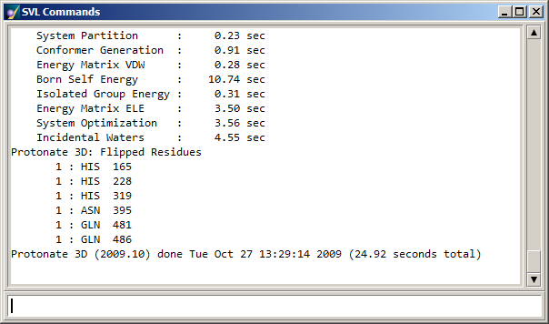
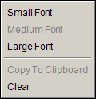

The SVL Commands window is opened by choosing Commands from the Window menu in the MOE Window, Sequence Editor or Database Viewer. It can also be raised by pressing the SVL button at the top right of the MOE Window or Sequence Editor. The SVL Commands window contains an SVL command line interface (CLI) that is used for inputting SVL commands; the CLI also exists on its own in all the primary MOE windows.
The upper section of the SVL Commands window echoes whatever is typed at any of the CLIs (command line interfaces) in MOE and displays the SVL return values of the entered expressions unless they are assignments or terminated by semi-colons.

Printed output generated by SVL write functions such as print, pr and write, whether invoked from the command line or from within an SVL program, appears here. Many of MOE's built-in applications use these functions to print reports or status information to the SVL Commands window. Applications that allow for saving a report to a file will usually output the report contents in this window if no save file has been specified. In general, commands entered at the CLI are coupled with an SVL print command so that their return values are automatically sent to the output area of the SVL Commands window. Note that in all cases a null return value is not displayed.
The scrollbar will scroll the output of the current session up to a predefined number of lines. You can control this value using the SVL Output History and SVL Command History parameters in the Miscellaneous page of the Configuration Options.
The font size in the output display area can be changed using a popup menu, which is opened by pressing the mouse popup button over the output area.
Located at the bottom of the window, as well as in the MOE Window, Sequence Editor, and Database Viewer, the command line interface (CLI) is where SVL commands are entered and issued. All SVL commands can be issued at the command line. Looping and if-then-else constructs are also permitted. The following, however, are not allowed:
The following keystrokes allow you to retrieve and edit commands entered in the command line:
| Press: | To: |
|---|---|
| Up/down arrow keys | Scroll to previous/next SVL command in the command history |
| Ctrl-C | Copy the text highlighted in the command line to the clipboard. |
| Ctrl-V | Paste the contents of the clipboard to the command line. |
| Ctrl-X | Cut the text highlighted in the command line to the clipboard. |
| Ctrl-P | Retrieve the previous command in the command history. |
| Ctrl-N | Retrieve the next command in the command history. |
| Right/left arrow keys | Move cursor right or left |
| Tab | Complete filename or command name |
| #/pat | Search for characters matching pat in the command history list, beginning with the most recent |
| #num | Recall the command at position num in the Command History |
| Shift-Del | Cut highlighted text to clipboard |
| Ctrl-Ins | Copy highlighted text to clipboard |
| Shift-Ins | Paste from clipboard
Note: On UNIX machines, middle-click in the CLI pastes highlighted text from any window to the CLI. |
| Esc | Clear the current line |
| Backspace | Erase character left of the cursor |
| Del | Erase character right of the cursor |
| Home/End | Move the cursor to the start/end of the line |
| Ctrl-L | Clear the output area. (This can also be achieved from the output area popup menu.) |
A search operator is available for retrieving commands from the command history. To search for a pattern, type #/pat (no preceding white space or characters) in the CLI. The pattern will be matched against the commands in the history list, beginning with the most recent. A failed search is indicated by a beep. The search line itself is not saved into the command history.
After typing your query, if you press Enter, the most recent command matching the pattern will be immediately executed. Pressing Shift-Enter, on the other hand, will display the command at the CLI, allowing you to view and modify the command prior to executing it.
At the CLI, enter a single quote followed by the first few letters of the filename, constant or symbol name and press Tab. MOE proceeds to match the letters against all files in the current directory (or, if a directory path has been provided, in the specified directory), all defined constants and all defined symbol names. If more than one match is found, it will fill in the letters until it reaches a point of ambiguity. To continue with the completion, you must then supply more letters and press Tab again. MOE will beep if it reaches a condition of ambiguity or does not find any matches.
Command completion is performed in the same way as filename completion (with the Tab key) except that the command name is not enclosed in single quotes.
The CLI maintains a history of issued commands. The up and down arrow keys, or the keystroke combinations <ctrl>-P and <ctrl>-N can be used to scroll through previous commands in the command history list. All CLIs share the same history buffer, i.e. there is only one history buffer. The size of the history buffer can be configured in the Miscellaneous page of the Configuration Options.
Specific commands can be recalled from the Command History by entering #num at the CLI, where num is the command number as shown by the SVL Command history. Similar to when using a search operator, after typing your query, if you press Enter, the command at that history position will be immediately executed. Pressing Shift-Enter, on the other hand, will display the command at the CLI, allowing you to view and modify the command prior to executing it.
The SVL Command logfile allows the contents of the SVL Commands Window, both commands and SVL return values, to be written to a file.
Text in the display area is non-editable but can be copied using the Copy To Clipboard option in the popup menu. The highlighted text is copied to the clipboard which can then be pasted to the command line or into a text editor, for example.
In the CLI, text is copied using Ctrl-Insert, cut using Shift-Del, or pasted from the clipboard using Shift-Insert. Ctrl-X, Ctrl-C and Ctrl-V will also work for cut, copy and paste, respectively. On UNIX machines, middle-clicking in the CLI pastes highlighted text from any window to the CLI.